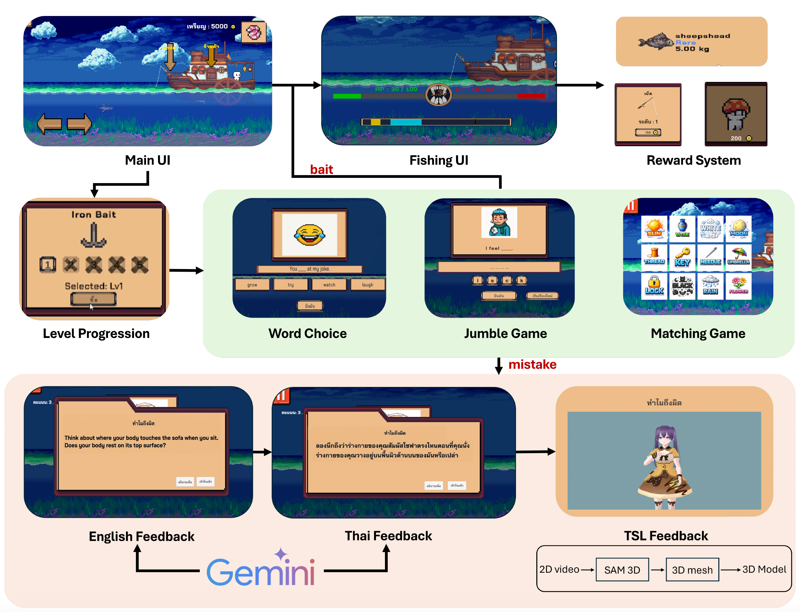
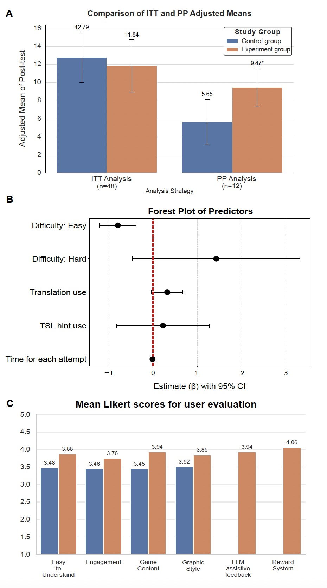

Improving English Literacy in Thai Deaf Students: An LLM-Integrated Game with AI Feedback
Abstract
Deaf and Hard-of-Hearing (DHH) students often face significant challenges in acquiring English vocabulary and grammar due to limited access to auditory information and reduced exposure to phonological features. This study presents a game-based English learning system specifically designed for Thai DHH students, integrating Large Language Models (LLMs) for adaptive AI feedback, Thai language translation, and Thai Sign Language (TSL) support.
The system was evaluated through a controlled experimental design with 62 secondary students from the Setsatian School for the Deaf. While the Intention-to-Treat (ITT) analysis showed no significant overall effect, a Per-Protocol (PP) analysis targeting engaged participants (≥70% attendance) revealed a statistically significant and large intervention effect (p = .022, η²p = .549). User satisfaction surveys demonstrated improved engagement and satisfaction with game design and visual elements.
Problem Statement
In Thailand, deaf education adopts a bilingual-bicultural approach where Thai Sign Language (TSL) is the primary medium, while written Thai and English are introduced as second and third languages. Despite structured instruction, English proficiency among DHH students remains significantly below expected levels:
- Grade 9-12 DHH students often demonstrate English competency equivalent to Grade 6 hearing students
- Limited accessible learning materials and sign-language-integrated instruction
- Traditional teaching methods (flashcards, picture books) lack scalability and require heavy teacher facilitation
- Absence of standardized sign-language-supported educational technology tools
System Architecture

Figure 1: System Overview & Game Interface
Game-Based Learning Module (GBL)
The system integrates three distinct game modalities aligned with sequential cognitive learning stages:
- Word Choice: Students fill in sentence blanks by selecting correct lexical options with visual prompts. This familiar assessment structure minimizes cognitive load and test-taking anxiety.
- Jumble Game: Students arrange scrambled linguistic elements to construct accurate words or sentences. The vocabulary component focuses on character sequencing, while sentences require syntactical organization.
- Matching Game: Students connect sentences to corresponding images or establish links between visuals based on functional relationships, requiring application of cumulative vocabulary and syntax knowledge.
Level-Based Progression
Each modality is partitioned into five operational levels designed to facilitate iterative learning:
- Levels 1 & 3: Initial vocabulary acquisition and introduction of new content
- Levels 2 & 4: Reinforcement intervals for review and memory retention optimization
- Level 5: Synthesis and application of cumulative knowledge through complex grammar-focused tasks
AI-Assisted Learning Module
- LLM Feedback: Gemini 2.5 Flash generates adaptive, accessible feedback with simplified language and cognitive accessibility
- Thai Sign Language (TSL) Support: 3D pose estimation processes TSL videos to animate sign language explanations
- Personalization: Retrieval-Augmented Generation (RAG) framework adapts content based on individual performance and learning history
Curriculum Design
Learning content is aligned with the Thai Basic Education Core Curriculum at the Grade 6 level (CEFR A1 proficiency), addressing four targeted language domains:
- Vocabulary Acquisition: Core lexical items essential for basic communication
- Foundational Morphosyntax: Singular/plural inflection, articles, prepositions of place
- Core Tense System: Present simple, present continuous, past simple, and future simple
- Visual-Based Learning: All content integrated with visual prompts to support visual-first communication style of DHH learners
Evaluation Methodology
- Participants: 62 secondary students (Grades 9-12) from Setsatian School for the Deaf in Thailand
- Study Design: Randomized controlled trial with pre-test, intervention (30 sessions × 20 minutes), and post-test
- Control Group: 31 students using existing English learning game for deaf students
- Intervention Group: 31 students using the proposed LLM-integrated system with Gemini 2.5 Flash backend
- Data Collection: Automated in-game logging (response correctness, assistive feature usage, response duration) + post-intervention user satisfaction survey
Evaluation Results
LLM Model Selection
Using an LLM-as-a-judge framework (Llama 3), we compared Gemini 2.5 Flash vs GPT-4o Mini across accuracy, tone, and clarity (1-5 scale). Gemini 2.5 Flash outperformed with a mean score of 4.08 vs 3.68, demonstrating superior pedagogical tone and precision in generating accessible language hints.
Post-Test Score Analysis
Intention-to-Treat (ITT) Analysis (n = 50): No statistically significant intervention effect (p = .639, η²p = .005). Baseline pre-test scores were the strongest predictor of performance (p < .001, η²p = .272), indicating prior knowledge masked intervention impact.
Per-Protocol (PP) Analysis (n = 12, ≥70% attendance): Statistically significant and large intervention effect (p = .022, η²p = .549). Adjusted post-test means showed intervention group scored significantly higher (M_adj = 9.47) vs control (M_adj = 5.65), demonstrating effectiveness for engaged participants.
Learning Outcome Predictors
Linear mixed-effects model analysis identified the following predictors of attempt frequency:
- Task Difficulty: Students required significantly fewer attempts for "Easy" questions (β = -.794, p < .001) — primary predictor
- Translation Feature: Showed marginal trend (β = .319, p = .074)
- TSL Hint Usage: Not a significant predictor of attempt frequency (p > .05)
- Individual Differences: Approximately 21.6% of variance stemmed from individual student characteristics and learning histories
Key Observation: Students preferred rapid trial-and-error retries over processing assistive feedback, suggesting LLM hints functioned primarily as an engagement-sustaining safety net rather than a direct error-reduction mechanism. This finding indicates a need to design feedback strategies that counteract the "rapid-retry" behavior.
User Experience & Satisfaction
Post-intervention survey (Likert scale 1-5) demonstrated intervention group outperformed control across all dimensions:
- Ease of Understanding: 3.88 vs 3.48
- Engagement: 3.76 vs 3.46
- Game Content: 3.94 vs 3.45
- Graphic Style: 3.85 vs 3.52
- LLM Assistive Feedback: 3.94
- Reward System: 4.06
The largest satisfaction gains appeared in game content and engagement dimensions, indicating effective gamification design and strong student preference for the visual and interactive elements.

Figure 2: Statistical Analysis
Key Insights & Implications
- Accessibility-First Design Works: Visual-first design with TSL support is critical for DHH learners' engagement and comprehension
- LLM-Powered Learning Shows Promise: When students are engaged, adaptive LLM-based feedback significantly improves learning outcomes
- Engagement is the Prerequisite: System efficacy depends on consistent student participation; attendance/engagement was the strongest predictor of success
- Game Mechanics Matter: Students rated game design, graphics, and reward systems highly, confirming well-designed gaming elements sustain motivation
- LLM Potential vs. Student Behavior Mismatch: Students' preference for rapid retries suggests optimization opportunities for feedback delivery mechanisms
Limitations & Future Directions
Study Limitations:
- Small sample size, particularly for PP analysis (n = 12) due to attrition
- High attrition rate in voluntary after-school setting (23% retention; only 50% completed full intervention)
- TSL and translation features utilized minimally by students despite availability
- Limited long-term follow-up data on knowledge retention and transfer
- Single-site study with specific school population; generalizability limited
Future Research & Development Directions:
- Design enhanced engagement mechanisms (e.g., social features, instructor integration) to improve attendance rates
- Expand TSL library for fuller sign-language coverage and optimize 3D sign rendering
- Develop feedback strategies that counteract rapid-retry behavior to maximize assistive hint effectiveness
- Conduct larger-scale, multi-site studies to validate long-term learning outcomes and generalize findings
- Expand platform to support additional languages and DHH populations in different linguistic contexts
- Explore partnerships with deaf schools and educational institutions for broader implementation and adoption
- Investigate integration of teacher dashboards for classroom-integrated deployment
Personal Reflection
This research project profoundly reinforced my commitment to leveraging emerging technologies responsibly to address real-world educational challenges. The work demonstrated that LLMs, when thoughtfully integrated with game-based learning principles and accessibility-first design, can create meaningful pathways to language acquisition for underserved populations. A critical learning—that technology efficacy depends not just on the innovation itself, but on sustained user engagement and protocol adherence—applies broadly to educational technology design and implementation. This project exemplifies why accessibility-first design and culturally-sensitive implementation are prerequisites, not afterthoughts, in developing inclusive educational systems that serve all learners equitably.